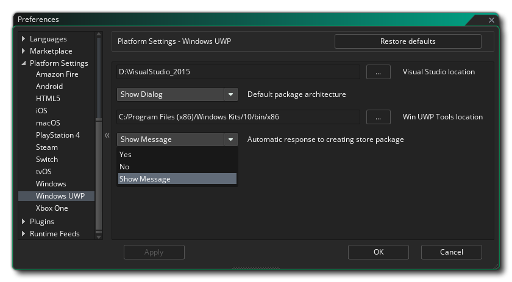

Cette section du manuel couvre les différentes préférences spécifiques à la plate-forme qui doivent être configurées avant de pouvoir compiler vos jeux sur certaines cibles. Celles-ci n'ont généralement besoin d'être configurées qu'une seule fois pour commencer (bien que les futures mises à jour des runtimes puissent exiger certaines modifications, mais celles-ci seront mentionnées dans les notes de mise à jour ) et sont utilisées pour pointer sur les kits de développement (SDK) requis et définir les options de base. comment vous souhaitez que GameMaker Studio 2 compile vos projets de jeu pour une plate-forme donnée. Notez que les plates-formes disponibles dépendent de la licence que vous avez et que toutes ne sont peut-être pas disponibles.
Vous trouverez ci-dessous une liste de toutes les plates-formes cibles disponibles et de leurs préférences:
Les préférences Amazon Fire sont divisées en différentes sections répertoriées ci-dessous. Un certain nombre d'entre eux font référence à Android outils Android, car la cible AMazon Fire est basée sur Android et partage les mêmes exigences en matière de SDK.
En haut des préférences, vous avez la possibilité de synchroniser les paramètres de l'exportation Android. Ceci est destiné aux personnes disposant de la licence Mobile et ayant déjà configuré et utilisé l'exportation Android, car Amazon Fire utilise presque les mêmes outils de génération Android. Cliquez simplement dessus pour importer tous les paramètres appropriés à partir d' Android, puis vérifiez-les pour vous assurer qu'ils sont corrects.
Sous le bouton Synch, vous pouvez définir la taille du segment de mémoire pour le JDK Android. Vous devez ensuite configurer les différents chemins afin que GameMaker Studio 2 sache où chercher les différents outils nécessaires à la création du package exécutable final et au test de votre jeu. Ceci est divisé en trois sections pour le Android SDK, Android NDK et Java JDK. Ces chemins doivent avoir été automatiquement remplis pour vous, mais en cas de problème, vous pouvez cliquer sur le bouton situé à droite pour ouvrir l’explorateur de fichiers et sélectionner manuellement les emplacements de chaque élément. Vous pouvez trouver des détails sur les versions requises pour chacun des éléments du SDK ici. Les chemins doivent être validés au fur et à mesure que vous les appliquez et un message indiquant "Trouvé" ou vous signalant les erreurs éventuelles (dans ce cas, vous devez modifier toutes les informations pour vous assurer qu'elles sont correctes).
Ci-dessous, vous avez les différentes options d' emballage qui sont:
- GameMaker Studio 2 toujours une installation complète de l'APK: si vous le GameMaker Studio 2 supprimera tous les GameMaker Studio 2 précédents de votre jeu de votre appareil, ainsi que tous les fichiers associés (par exemple, les fichiers *.ini) de votre appareil de test avant d'installer une nouvelle version de le jeu.
- Installer sur le package: lorsque cette option est marquée, compilation d'un exécutable final *.apk Le paquet l'installera également automatiquement sur le périphérique cible actuellement sélectionné.
Nous arrivons enfin au KeyStore. Il s’agit d’un fichier qui sera utilisé pour "signer" toutes vos applications Amazon Fire conséquent, indiquez correctement tous les détails et gardez à l’esprit que ce fichier sera nécessaire pour créer et mettre à jour toutes vos applications Amazon Fire à l’avenir. après l’avoir configuré, il est conseillé de prendre une capture d’écran des paramètres utilisés et de sauvegarder le fichier final. Si vous perdez ce fichier, vous ne pourrez plus mettre à jour les jeux déjà téléchargés sur le Google Play Store.
REMARQUE: Le même magasin de clés peut être utilisé pour les cibles Android et Amazon Fire.
Pour créer un nouveau fichier de clés, les informations suivantes sont requises:
- Nom de fichier: il s'agit du nom du fichier KeyStore. NOTE: Ce n'est pas votre nom ni le nom de l'entreprise, mais le nom du fichier à générer! Si vous avez déjà un fichier de clés provenant de projets précédents, vous pouvez cliquer sur le bouton du navigateur de fichiers ici et diriger GameMaker Studio 2 vers l'ancien fichier de clés (ou cliquer sur le bouton Importer ). Dans ce cas, vous devez toujours renseigner le reste des informations requises (comme lors de la première génération du fichier), mais vous ne devez pas cliquer sur le bouton Générer un hachage de clé!. Cela générera un nouveau fichier de clés, écrasant le précédent.
- Nom commun: ce serait normalement votre nom.
- Mot de passe: votre mot de passe de sécurité pour le fichier KeyStore, qui doit comporter au moins six caractères.
- Alias: c'est un autre nom qui peut être utilisé pour le fichier KeyStore et doit être différent du nom entré ci-dessus.
- Mot de passe alias: votre mot de passe de sécurité alias pour le fichier KeyStore, qui doit comporter au moins six caractères.
- Unité organisationnelle: département de l'entreprise dont vous faites partie.
- Organisation: Le nom de votre entreprise.
- Lieu: nom de la ville ou de la ville où vous résidez.
- Pays: code standard à deux lettres du pays où vous résidez.
Une fois que ces informations sont remplies et que vous en êtes satisfait, appuyez sur le bouton Générer un hachage de clés pour GameMaker Studio 2 pour créer le fichier KeyStore nécessaire. Cela peut prendre un moment, mais une fois terminé, il n’aura normalement pas besoin de le changer à nouveau. Notez que vous pouvez cliquer sur le bouton Importer pour importer un fichier de magasin de clés créé précédemment (voir la section Nom de fichier ci-dessus). Vous pouvez également récupérer le hachage SHA1 du magasin de clés en cliquant sur le bouton Afficher le hachage de clé. En appuyant dessus, vous obtiendrez deux clés de hachage de sécurité spéciales directement liées au fichier de clés que certains sites Web requièrent pour fonctionner correctement (par exemple, Facebook ou Google Play pour le hachage Sha1). Si vous en avez besoin, appuyez simplement sur le bouton, puis copiez et collez les clés de hachage générées.
Pour plus d'informations sur la configuration des kits SDK Amazon Fire requis, consultez cet article de la base de connaissances YoYo Games.
Les préférences Android sont divisées en différentes sections répertoriées ci-dessous.
En haut des préférences, vous avez la possibilité de synchroniser les paramètres de l'exportation Amazon Fire. Ceci est destiné aux personnes disposant de la licence Mobile et ayant déjà configuré et utilisé l'export Amazon Fire, car Android utilise presque les mêmes outils de génération Amazon Fire. Cliquez simplement dessus pour importer tous les paramètres appropriés à partir d' Amazon Fire, puis vérifiez-les pour vous assurer qu'ils sont corrects.
Sous le bouton Sync, vous avez la possibilité de définir la taille du segment de mémoire pour le JDK Android. Vous devez ensuite configurer les différents chemins afin que GameMaker Studio 2 sache où chercher les différents outils nécessaires à la création du package exécutable final et au test de votre jeu. Ceci est divisé en trois sections pour le Android SDK, Android NDK et Java JDK. Ces chemins doivent avoir été automatiquement remplis pour vous, mais en cas de problème, vous pouvez cliquer sur le bouton situé à droite pour ouvrir l’explorateur de fichiers et sélectionner manuellement les emplacements de chaque élément. Vous pouvez trouver des détails sur les versions requises pour chacun des éléments du SDK ici. Les chemins doivent être validés au fur et à mesure que vous les appliquez et un message indiquant "Trouvé" ou vous signalant les erreurs éventuelles (dans ce cas, vous devez modifier toutes les informations pour vous assurer qu'elles sont correctes).
Ci-dessous, vous avez les différentes options d' emballage qui sont:
- GameMaker Studio 2 toujours une installation complète de l'APK: si vous le GameMaker Studio 2 supprimera tous les GameMaker Studio 2 précédents de votre jeu de votre appareil, ainsi que tous les fichiers associés (par exemple, les fichiers *.ini) de votre appareil de test avant d'installer une nouvelle version de le jeu.
- Installer sur le package: lorsque cette option est marquée, compilation d'un exécutable final *.apk Le paquet l'installera également automatiquement sur le périphérique cible actuellement sélectionné.
Nous arrivons enfin au KeyStore. Il s’agit d’un fichier qui sera utilisé pour "signer" toutes vos applications Android. Veuillez renseigner correctement tous les détails et garder à l’esprit que ce fichier sera nécessaire pour créer et mettre à jour toutes vos applications Android à l’avenir. Pour cela, il est conseillé de prendre une capture d’écran des paramètres utilisés et de sauvegarder le fichier final. Si vous perdez ce fichier, vous ne pourrez plus mettre à jour les jeux déjà téléchargés sur le Google Play Store.
REMARQUE: Le même magasin de clés peut être utilisé pour les cibles Android et Amazon Fire.
Pour créer un nouveau fichier de clés, les informations suivantes sont requises:
- Nom de fichier: il s'agit du nom du fichier KeyStore. NOTE: Ce n'est pas votre nom ni le nom de l'entreprise, mais le nom du fichier à générer! Si vous avez déjà un fichier de clés provenant de projets précédents, vous pouvez cliquer sur le bouton du navigateur de fichiers ici et diriger GameMaker Studio 2 vers l'ancien fichier de clés (ou cliquer sur le bouton Importer ). Dans ce cas, vous devez toujours renseigner le reste des informations requises (comme lors de la première génération du fichier), mais vous ne devez pas cliquer sur le bouton Générer un hachage de clé!. Cela générera un nouveau fichier de clés, écrasant le précédent.
- Nom commun: ce serait normalement votre nom.
- Mot de passe: votre mot de passe de sécurité pour le fichier KeyStore, qui doit comporter au moins six caractères.
- Alias: c'est un autre nom qui peut être utilisé pour le fichier KeyStore et doit être différent du nom entré ci-dessus.
- Mot de passe alias: votre mot de passe de sécurité alias pour le fichier KeyStore, qui doit comporter au moins six caractères.
- Unité organisationnelle: département de l'entreprise dont vous faites partie.
- Organisation: Le nom de votre entreprise.
- Lieu: nom de la ville ou de la ville où vous résidez.
- Pays: code standard à deux lettres du pays où vous résidez.
Une fois que ces informations sont remplies et que vous en êtes satisfait, appuyez sur le bouton Générer un hachage de clés pour GameMaker Studio 2 pour créer le fichier KeyStore nécessaire. Cela peut prendre un moment, mais une fois terminé, il n’aura normalement pas besoin de le changer à nouveau. Notez que vous pouvez cliquer sur le bouton Importer pour importer un fichier de magasin de clés créé précédemment (voir la section Nom de fichier ci-dessus). Vous pouvez également récupérer le hachage SHA1 du magasin de clés en cliquant sur le bouton Afficher le hachage de clé. En appuyant dessus, vous obtiendrez deux clés de hachage de sécurité spéciales directement liées au fichier de clés que certains sites Web requièrent pour fonctionner correctement (par exemple, Facebook ou Google Play pour le hachage Sha1). Si vous en avez besoin, appuyez simplement sur le bouton, puis copiez et collez les clés de hachage générées.
Pour plus d'informations sur la configuration des kits SDK Android requis, consultez cet article de la base de connaissances de YoYo Games.
Les préférences HTML5 ont les options suivantes:
- Type de package par défaut: lors de la création d’un package exécutable HTML5 final, vous pouvez choisir entre Package en tant que fichiers volants - qui générera simplement tous les fichiers requis dans un dossier - ou Package en tant que Zip - pour créer un fichier ZIP compressé contenant le jeu. et tous les fichiers supplémentaires dans. Par défaut, vous aurez le choix entre les deux options que vous souhaitez choisir lors de la compilation, mais vous pouvez définir cette préférence de manière à toujours utiliser l’une ou l’autre. Notez que lorsque cette option est définie sur Afficher la boîte de dialogue, dans la fenêtre de la boîte de dialogue qui s’affiche lors de la compilation, choisissez "Mémoriser option de mise en forme" définira cette préférence sur l’option que vous avez sélectionnée.
Les préférences iOS ont les options suivantes:
- Identifiant d'équipe par défaut: vous pouvez ajouter ici votre identifiant d'équipe par défaut, tel qu'attribué par Apple. Cet identifiant d'équipe sera utilisé lorsque vos fichiers de jeu seront envoyés à Xcode pour créer l'application, et permettra à Xcode de générer les certificats de signature requis. Notez que ce paramètre sera appliqué par défaut à tous les jeux construits pour iOS, mais il peut être écrasé projet par projet à partir des options de jeu générales iOS.
- Supprimer la création et l'exécution: par défaut, lorsque vous créez un projet iOS, puis créez un package final exécutable, GameMaker Studio 2 GameMaker le package, puis tente de l'exécuter sur tous les appareils connectés. Cocher cette option empêchera la création de l'application et son exécution sur l'appareil. Il suffira de créer un projet XCode sur le Mac hôte.
- Chemin d'installation macOS: chemin d'installation des fichiers de projet sur le Mac de génération.
Les préférences macOS ont les options suivantes:
- Identifiant d'équipe par défaut: vous pouvez ajouter ici votre identifiant d'équipe par défaut, tel qu'attribué par Apple. Cet identifiant d'équipe sera utilisé lorsque vos fichiers de jeu seront envoyés à Xcode pour créer l'application, et permettra à Xcode de générer les certificats de signature requis. Notez que ce paramètre sera appliqué par défaut à tous les jeux conçus pour macOS, mais il peut être écrasé projet par projet à partir des options de jeu générales macOS.
Le SDK Steam est utilisé pour les Windows, Mac OS and Ubuntu (Linux) à distribuer via la Steam forme Steam. Cette section contient les options de configuration requises pour le faire fonctionner dans vos projets:
- Path To Steam SDK: chemin du système où vous avez installé le SDK Steam. Une fois que vous avez défini ce chemin d'accès au SDK, vous devez activer Steam dans les options de jeu, puis ajouter un identifiant d'application pour chaque plate-forme.
Les préférences Windows ont les options suivantes:
- Chemin Visual Studio: cette option permet de GameMaker Studio 2 vers l’installation de MS Visual Studio sur le PC de compilation.
- Type de package par défaut: Lors de la création d'un package exécutable Windows final, vous pouvez choisir de créer un programme d' installation (à l'aide de NSIS ) ou un fichier ZIP compressé contenant le jeu et tous les fichiers supplémentaires. Par défaut, vous aurez le choix entre les deux options que vous souhaitez choisir lors de la compilation, mais vous pouvez définir cette préférence de manière à toujours utiliser l’une ou l’autre. Notez que lorsque cette option est définie sur Afficher la boîte de dialogue, dans la fenêtre de la boîte de dialogue qui s’affiche lors de la compilation, choisissez "Mémoriser option de mise en forme" définira cette préférence sur l’option que vous avez sélectionnée.
Les préférences Windows UWP comportent les options suivantes: 
- Emplacement Visual Studio: cette option permet de GameMaker Studio 2 vers l’installation de MS Visual Studio sur le PC de compilation.
- Architecture de package par défaut: lors de la création d’un package exécutable Windows UWP final, vous pouvez choisir de créer un package x86, x64 ou ARM contenant le jeu et tous les fichiers supplémentaires qu’il contient. Ici, vous pouvez définir une valeur par défaut pour le paquet à utiliser ou sélectionner Afficher le dialogue pour faire apparaître une fenêtre lorsque vous cliquez sur le bouton Compiler, vous demandant lequel choisir. En général, vous souhaitez cibler les ordinateurs x86 pour Windows 10, x64 pour les périphériques Xbox One et ARM pour Windows 10.
- Emplacement des outils UWP Win: cette option permet de GameMaker Studio 2 vers le chemin d’installation des outils UWP sur le PC de compilation.
- Réponse automatique à la création du package de magasin: lors de la création d’un package exécutable Windows UWP final, il vous sera demandé si vous souhaitez créer un package de magasin ou non. Vous pouvez définir cette option pour ignorer automatiquement cette fenêtre contextuelle en utilisant Oui ou Non par défaut. Vous pouvez également définir Afficher le dialogue pour que la fenêtre apparaisse toujours lorsque vous cliquez sur le bouton Compiler.


Notez qu'en dehors de la configuration de ces préférences, vous devrez également configurer les périphériques ciblés par certaines de ces plates-formes. Dans le cas contraire, vous ne pourrez peut-être pas compiler ni tester vos projets. Reportez-vous à la section Compilation et à la section Gestionnaire de périphériques pour plus d'informations.
Le manuel n'indique pas les différentes préférences de la console en raison des différentes restrictions légales appliquées par les différentes sociétés. Si vous possédez une licence de console, vous pouvez obtenir ces informations auprès du service YoYo Games assistance de YoYo Games, mais vous devez d'abord contacter YoYo Games avec votre email d'ID de console et demander l'autorisation d'afficher les différentes sections.